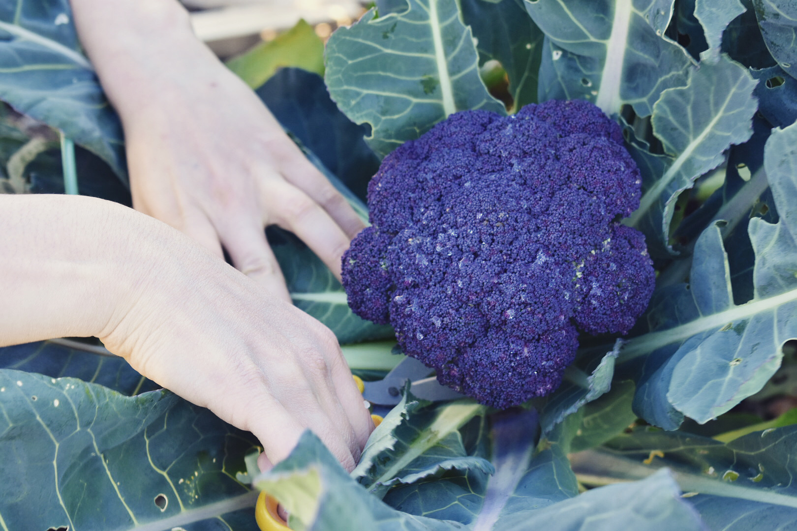
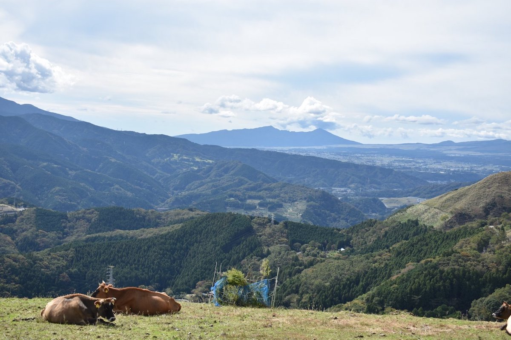

HOME
VISION
ACTIVITIES
NEWS
GALLERY
BLOG
JOIN / SUPPORT
下中玉ねぎ
特設ページ
yayoi.dining@gmail.com
HOME
VISION
ACTIVITIES
NEWS
GALLERY
BLOG
JOIN / SUPPORT
下中玉ねぎ
特設ページ


食の力で，うまいがつながる未来を。
生産と消費の両方に関わる活動をしています。
News
2021年3月30日
4月の活動予定（新歓情報）
2021年3月18日
2022年度も新規メンバーを募集中
2021年12月12日
玉ねぎの植え付けを行いました
2021年11月1日
マルシェの予定
About
東大農学部発の農業サークルです。東大を中心に複数の大学のメンバーで活動をしています。多様なバックグラウンドを持ったメンバーが，農作物の生産・加工・販売など，多様な活動を行なっています。
理念
Vision
活動
Activities
ブログ
Blog
SNS
Tweets by agrlien